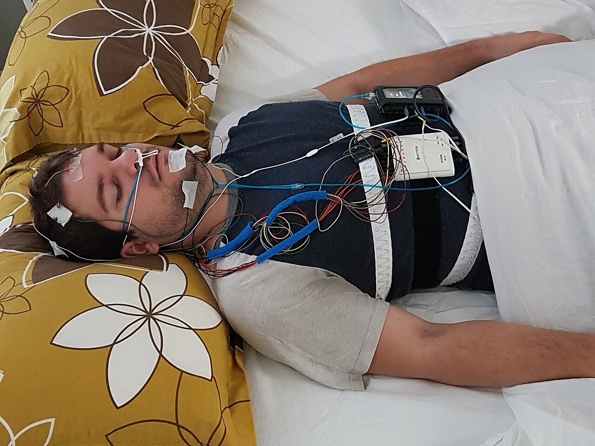

💪 Sức khỏe Nam giới
Relationship — Sleep & Marital HarmonyDeep dive⏱ 8 phút đọc
Giấc Ngủ & Hạnh Phúc Lứa Đôi: Thiếu Ngủ Làm Giảm Sự Thấu Cảm & Tăng Xung Đột Thế Nào?
Bạn có bao giờ nhận thấy những trận cãi vã nảy lửa nhất giữa hai vợ chồng thường xảy ra sau một đêm mất ngủ hoặc trằn trọc? Nghiên cứu thực nghiệm đột phá của Đại học UC Berkeley đăng trên tạp chí Social Psychological and Personality Science đã chứng minh: Chỉ cần một trong hai người bị thiếu ngủ, tỷ lệ xảy ra xung đột gay gắt vào ngày hôm sau sẽ tăng gấp đôi, đồng thời khả năng đọc vị cảm xúc và sự thấu cảm của đối phương sụt giảm nghiêm trọng.
Nguồn nghiên cứu & Thiết bị: Social Psychological and Personality Science & Sleep Medicine Reviews•Màn hình App: Sleep Analytics & Interpersonal Dynamics Screen•Chỉ số: Sleep Debt Spillover, Empathy Circuitry & Conflict Escalation
💡Điểm Cốt Lõi & Hành Động Thực Tế
Mất ngủ làm tổn thương trực tiếp mạch thần kinh thùy trán - hạch hạnh nhân, khiến con người mất khả năng giải mã chính xác biểu cảm gương mặt của bạn đời (dễ nhìn nhận một khuôn mặt trung tính thành đe dọa hoặc thù địch). Ngủ chung giường nhưng tối ưu hóa nhiệt độ, nệm độc lập hoặc áp dụng 'ly hôn giấc ngủ' (Sleep Divorce) khi một người ngáy ngủ là giải pháp y khoa bảo vệ hạnh phúc hôn nhân.
Nghiên Cứu UC Berkeley: Chiếc Giường Ngủ Quyết Định Sự Bình Yên Gia Đình
Trong một nghiên cứu tâm lý học - sinh học thần kinh được trích dẫn rộng rãi của Gordon & Chen (Social Psychological and Personality Science, 2014), các nhà khoa học đã theo dõi nhật ký giấc ngủ bằng thiết bị đeo và ghi hình các cuộc tranh luận của hàng trăm cặp đôi:
- Tăng Gấp Đôi Tỷ Lệ Xung Đột: Sau một đêm ngủ kém (thời lượng ngủ dưới 6 tiếng hoặc thức giấc nhiều lần), các cặp đôi có tỷ lệ nổ ra tranh cãi vào ngày hôm sau cao gấp 2.2 lần so với những ngày ngủ ngon.
- Suy Giảm Khả Năng Giải Quyết Bất Đồng: Khi cả hai cùng bị thiếu ngủ, khả năng sử dụng các tín hiệu sửa chữa xoa dịu (Repair attempts) giảm sút nghiêm trọng; cuộc trò chuyện nhanh chóng biến thành những lời lăng mạ và công kích cá nhân.
- Mất Khả Năng Thấu Cảm (Empathic Inaccuracy): Người thiếu ngủ bị suy giảm nghiêm trọng khả năng đọc chính xác biểu cảm vi mô trên gương mặt của bạn đời. Khi đối phương thể hiện vẻ mặt mệt mỏi hoặc trầm tư, người thiếu ngủ thường diễn giải sai lệch thành: "Cô ấy đang khinh thường mình" hoặc "Anh ta đang chống đối mình".

📊 Đứt Gãy Kết Nối Thần Kinh (Fronto-Amygdalar Decoupling): Khi thiếu ngủ, hạch hạnh nhân (trung tâm cảm xúc nguyên thủy) hoạt động quá mức 60%, trong khi vỏ não trước trán mất hoàn toàn khả năng phanh hãm lý trí. Nguồn sơ đồ: Wikimedia Commons ↗
3 Tác Động Tàn Khốc Của Nợ Ngủ Lên Trục Tình Cảm Vợ Chồng
Cơ Chế Sinh Học Thần Kinh
Biểu Hiện Trong Tương Tác Hàng Ngày
Hậu Quả Đối Với Mối Quan Hệ
Sụt Giảm Lòng Biết Ơn (Gratitude Deficit)
Nghiên cứu cho thấy người thiếu ngủ hiếm khi nói lời cảm ơn bạn đời vì những việc họ làm.
Đối phương cảm thấy những hy sinh của mình bị coi là điều hiển nhiên; ấm ức tích tụ.
Cạn Kiệt Năng Lượng Tự Kiềm Chế (Self-Control Depletion)
Không thể kiềm chế cơn bực bội trước những lỗi lầm nhỏ nhặt (để quên chìa khóa, làm đổ nước).
Không khí gia đình trở nên ngột ngạt; đối tác luôn phải "đi trên vỏ trứng".
Triệt Tiêu Ham Muốn Tình Dục & Oxytocin
Vùng dưới đồi ưu tiên tiết cortisol sinh tồn thay vì tiết hormone gắn kết; mệt mỏi thể chất khiến giường ngủ chỉ để ngủ li bì.
Đóng băng hoàn toàn đời sống chăn gối; mối quan hệ chuyển dần sang trạng thái "bạn cùng phòng trọ".
"Ly Hôn Giấc Ngủ" (Sleep Divorce): Điều Cấm Kỵ Hay Cứu Cánh Y Khoa?
Một khảo sát của Hiệp hội Y học Giấc ngủ Hoa Kỳ (AASM, 2023) cho thấy hơn một phần ba người Mỹ trưởng thành lựa chọn ngủ riêng phòng hoặc riêng giường với bạn đời:
- Nếu một người mắc chứng ngáy to mãn tính, ngưng thở khi ngủ (OSA), hay cựa quậy liên tục do hội chứng chân không yên, người nằm bên cạnh có thể bị đánh thức từ 10 đến 20 lần mỗi đêm mà không hề hay biết.
- Hậu quả là cả hai cùng thức dậy trong trạng thái kiệt quệ và bắt đầu ngày mới bằng sự cáu kỉnh hướng về nhau.
- Các chuyên gia hôn nhân khẳng định: "Ngủ riêng vì lý do sức khỏe giấc ngủ KHÔNG đồng nghĩa với rạn nứt tình cảm". Khi cả hai cùng có được 8 tiếng ngủ sâu trọn vẹn, họ sẽ thức dậy với tâm trạng tràn đầy năng lượng, sự kiên nhẫn và tình yêu thương để dành cho nhau suốt cả ngày!
Giao Thức 4 Bước Tối Ưu Giấc Ngủ Cho Hạnh Phúc Đôi Lứa
Phương Pháp "Chăn Đôi Scandinavian" (The Scandinavian Sleep Method): Ngủ chung một giường nệm lớn nhưng sử dụng hai chiếc chăn đơn riêng biệt. Phương pháp phổ biến ở Bắc Âu này giúp triệt tiêu hoàn toàn cuộc chiến giành chăn giữa đêm và ngăn ngừa sự truyền nhiệt làm đối phương thức giấc.
Quy Tắc "Cấm Tranh Cãi Sau 21:00 Tối": Thống nhất một quy ước sắt đá: Bất kể có chuyện gì xảy ra, tuyệt đối không bao giờ thảo luận các vấn đề căng thẳng hay đưa ra quyết định hệ trọng sau 21:00. Hãy nói: "Bây giờ não tụi mình đều đang mệt, mai ăn sáng xong tụi mình sẽ nói tiếp".
Điều Trị Triệt Để Tật Ngáy Ngủ & Ngưng Thở: Người ngáy ngủ cần đi khám chuyên khoa hô hấp để kiểm tra vách ngăn mũi, amidan hoặc sử dụng máng chống ngáy/máy CPAP để trả lại không gian yên tĩnh cho người bạn đời.
Tạo Nghi Thức "Kết Nối 10 Phút Trước Khi Tắt Đèn": Cùng nhau lên giường, ôm nhau trò chuyện nhẹ nhàng trong 10 phút để kích hoạt giải phóng oxytocin và hạ nhịp tim trước khi quay lưng về phía chăn của mình để chìm vào giấc ngủ sâu.
Tài Liệu Tham Khảo & Nguồn Y Khoa
Gordon, A. M., & Chen, S. (2014).The role of sleep in interpersonal conflict: Do sleepless nights mean worse fights? Social Psychological and Personality Science, 5(2), 168–175. Đọc trên SAGE ↗
Troxel, W. M., Robles, T. F., et al. (2007).Marital quality and the metabolic syndrome in women. Archives of Internal Medicine. Đọc trên JAMA Network ↗
Yoo, S. S., Gujar, N., Hu, P., Jolesz, F. A., & Walker, M. P. (2007).The human emotional brain without sleep—a prefrontal amygdala disconnect. Current Biology, 17(20), R877–R878. Đọc trên PubMed ↗
American Academy of Sleep Medicine. (2023).Sleep Divorce: Millions of Americans choosing to sleep apart. AASM Clinical News. Đọc trên AASM ↗
📚
Nguồn Tham Khảo Y Khoa & Nghiên Cứu Gốc
Bài viết này được tổng hợp và kiểm chứng từ các nghiên cứu y sinh học, hướng dẫn lâm sàng và tài liệu khoa học thiết bị đeo của Social Psychological and Personality Science & Sleep Medicine Reviews.
💪 Men's Health
Relationship — Sleep & Marital HarmonyDeep dive⏱ 8 min read
Sleep and Relationship Health: How Sleep Debt Blunts Empathy & Escalates Spousal Conflict
Have you noticed that the most vicious, irrational marital arguments invariably follow nights of restless, fragmented sleep? Groundbreaking empirical trials conducted at UC Berkeley and published in Social Psychological and Personality Science revealed that when either partner suffers poor sleep, the likelihood of severe conflict the following day doubles, while facial emotion recognition and empathic accuracy collapse.
Clinical & Wearable Source: Social Psychological and Personality Science & Sleep Medicine Reviews•Mapped Screen: Sleep Analytics & Interpersonal Dynamics Screen•Biometric: Sleep Debt Spillover, Empathy Circuitry & Conflict Escalation
💡Key Actionable Takeaway
Sleep debt disconnects the fronto-amygdalar circuit, severely blunting empathic decoding and causing partners to misinterpret neutral facial cues as hostile threats. Optimizing shared bed acoustics, separate duvets, or tactical 'sleep divorce' when chronic snoring exists acts as direct preventative medicine for marital longevity.
The UC Berkeley Trial: The Bedroom Dictates Marital Peace
In an influential neuro-behavioral study by Gordon & Chen (Social Psychological and Personality Science, 2014), researchers tracked objective wearable sleep metrics and filmed marital arguments:
- Doubles Conflict Rate: Following poor sleep (<6 hours or fragmented awakenings), couples experienced a 2.2-fold higher likelihood of severe conflict the following day.
- Impairs De-escalation: When both partners were sleep-deprived, the ability to deploy repair attempts collapsed; arguments rapidly descended into vitriolic personal insults.
- Empathic Inaccuracy: Sleep debt severely impairs facial micro-expression recognition. Sleep-deprived partners systematically misinterpret neutral facial expressions as hostile, condescending, or rebellious threats.
📊 Fronto-Amygdalar Disconnect: Sleep deprivation triggers a 60% hyper-reactivity surge in the primitive amygdala while severing inhibitory prefrontal emotional governance. Diagram source: Wikimedia Commons ↗
3 Devastating Tolls of Sleep Debt on Domestic Life
Neuro-Autonomic Impairment
Real-World Domestic Symptom
Chronic Relational Outcome
Gratitude Deficit
Sleep-deprived partners rarely notice or express thanks for domestic contributions.
Inability to suppress irritation over trivial mistakes (misplaced keys, spilled water).
Hostile, hyper-reactive environment; walking on eggshells.
Libido & Oxytocin Extinction
Hypothalamus prioritizes survival cortisol; physical exhaustion crowds out bedroom intimacy.
Total bedroom freeze; transition into detached roommates.
"Sleep Divorce": Medical Prudence or Relational Failure?
The American Academy of Sleep Medicine (AASM, 2023) reports that over one-third of adult couples regularly sleep in separate beds or rooms:
- If one partner suffers from chronic loud snoring, sleep apnea (OSA), or restless leg syndrome, the co-sleeper is micro-awakened 10 to 20 times nightly without conscious awareness.
- Both wake up chronically exhausted and immediately turn their irritability toward each other.
- Relationship clinicians affirm: "Sleeping apart for sleep health DOES NOT reflect emotional detachment." When both partners enjoy 8 hours of restorative deep sleep, they wake up with abundant patience, gratitude, and physical desire!
4-Step Practical Protocol for Sleep-Protected Harmony
Adopt the Scandinavian Sleep Method: Share a large mattress but use two separate single duvets. Eliminates middle-of-the-night blanket tug-of-war and thermal disruptions.
Enforce the 21:00 Conflict Curfew: Ban all serious or contentious discussions after 21:00. Say: "Our brains are exhausted right now; let's discuss this tomorrow over breakfast."
Treat Snoring and Sleep Apnea Clinically: Snoring partners must consult an ENT or sleep specialist for CPAP therapy to protect both partners' health.
Institute the 10-Minute Pre-Sleep Attunement: Cuddle and talk softly for 10 minutes prior to turning off lights to stimulate oxytocin and lower heart rates before rolling over to sleep.
Clinical References & Scientific Sources
Gordon, A. M., & Chen, S. (2014).The role of sleep in interpersonal conflict: Do sleepless nights mean worse fights? Soc Psychol Personal Sci, 5(2), 168–175. View on SAGE ↗
Troxel, W. M., et al. (2007).Marital quality and the metabolic syndrome in women. Arch Intern Med. View on JAMA Network ↗
Yoo, S. S., Gujar, N., et al. (2007).The human emotional brain without sleep—a prefrontal amygdala disconnect. Curr Biol, 17(20), R877–R878. View on PubMed ↗
American Academy of Sleep Medicine. (2023).Sleep Divorce: Millions of Americans choosing to sleep apart. AASM Clinical News. View on AASM ↗
📚
Clinical Reference & Scientific Backing
This article is synthesized from peer-reviewed medical literature, clinical guidelines, and wearable biometric validation studies from Social Psychological and Personality Science & Sleep Medicine Reviews.